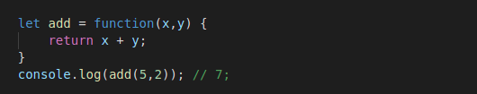
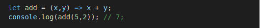
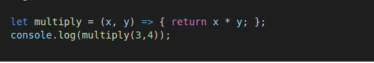
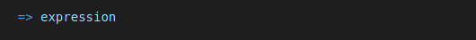
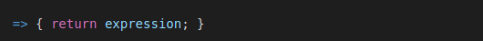
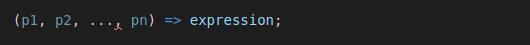

Arrow functions looks very different from the functions expression. Instead of the function keyword, it uses an arrow ( => )
made up of an equal sign and a greater-than character. The function expression and arrow function do same
thing apart from minor detail, which we will discuss now.
The arrow function provieds alternative way to write a shorter syntex compared to the function expression.
The bellow example defines function expression.
Below example uses an arrow function which computes similar to above function.
There are multiple ways we can use the arrow function. We can use with the block and without the block.
If you use te block syntax, you need to specify the return keyword:
The following expression
is equivalent to the below expression:
For two or more parameters we can use the following syntax:

Arrow functions are an interesting new feature in ECMAScript 6, and one of the features that is pretty
solidified at this point in time. As passing functions as arguments has become more popular, having a
concise syntax for defining these functions.